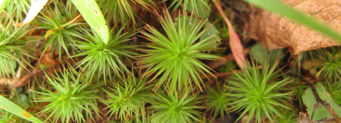
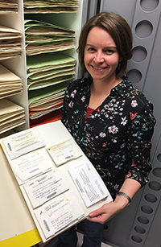

Principal Investigator

Dr. Jessica M. Budke - Associate Professor & Herbarium Director (TENN)
-
Ph.D., University of Connecticut, 2011
M.S., University of Connecticut, 2005
B.S., Miami University, 2003
Email jbudke@utk.edu
Google Scholar Page
Current CV
Featured in Women in Bryology - PDF